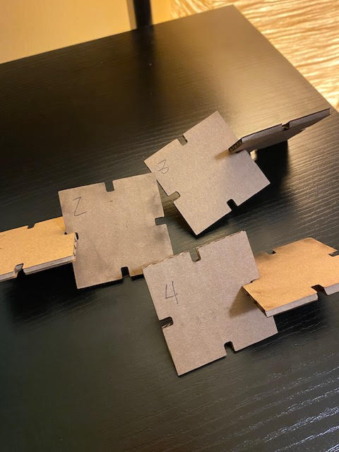

Assignment 1: Modeling and Laser Cutting
The base polygon shape of my final design's dimensions measure 57.7 mm on all sides. I added 4 symmetrical notches on each side, and for a snug press-fit, I rounded the interior and exterior corners of each notch (i.e., the corners closeest to the mid-point of the rectangle and the opening of each notch). It took some trial and error to get to this final fabrication - I build a tower from my laser cut shapes!
My design journey started with some research. I bought this great book last summer from the Talk Story Bookstore on Kauai, Hawaii and took this opportunity to use it for design inspiration!

Initially, thinking about my press-fit goals for this assignment, this design caught my attention:

In lieu of sketching, I used playing cards (having somewhat similar geometric shape/dimensions) to explore how the shapes might intersect when cutting and assembling them into a new form.
However, I quickly discovered some downsides about using playing cards (in lieu of paper or cardboard) to simulate press-fitting: the card texture is stiff and difficult to cut, and the smooth, slippery card surface creates less friction, so press fitting them into a new, complex form becomes difficult. The kinesthetic nature of this activity was gave me an early idea of how to intersect the shapes and build a new form, but I abandoned the playing cards after about 15 minutes of physical prototyping.


Being unfamiliar with computer-assisted design, I watched a tutorial given by our fantastic teaching assistant, Junchao Yang, on how to model objects using Rhino software. Then I prototyped a new rectangular shape in digital form. In my first Rhino model, the shape's notches measured 4 mm in width and 6.36 mm in depth.

I went to the makerspace to laser print my design and do some testing. Before printing, I had to convert my Rhino file (.3dm) to Adobe Illustrator (.ai), reduce the stroke weight to .01 pt, and change the color to RGB (255, 0, 0) so that the laser printer would recognize it.
Rhino 7 file (first version)
Adobe Illustrator file (first version)
When testing the fit of my first pair of laser printed shapes, I found the press fit to be too loose. I made several minor adjustments to the width of my notches, looking for a better fit.

Then the makerspace lab tech made a very constuctive suggestion - for a better fit, increase the depth of the notches as well, in addition to the width. Back in Rhino, I finally reduced the width of my notches to 3.5 mm and increased their depth to 14 mm. I reexported the Rhino model to an Illustrator file, reset the stroke and RGB color settings, then re-ran the print job on the second version of my base polygon shape. Success at last! A snug fit!
Rhino 7 file (second version)
Adobe Illustrator file (second version)
Big thanks to the makerspace lab tech who helped me successfullly problem solve!